Optimization of Photonic Devices: Implementation of Auto-Differentiable Numerical Methods in Open-Source Software
Séminaire GDR Ondes
Introduction
Introduction
\[ \usepackage{amsmath,amssymb} \newcommand{\e}{\varepsilon} \newcommand{\exx}{\e_{xx}} \newcommand{\eyy}{\e_{yy}} \newcommand{\ea}{\e_{a}} \newcommand{\ezz}{\e_{zz}} \newcommand{\exy}{\e_{xy}} \newcommand{\eyx}{\e_{yx}} \newcommand{\muxx}{\mu_{xx}} \newcommand{\muyy}{\mu_{yy}} \newcommand{\mua}{\mu_{a}} \newcommand{\muzz}{\mu_{zz}} \newcommand{\ef}{\e_{\rm f}} \newcommand{\ed}{\e_{\rm d}} \newcommand{\tdf}{\tan \delta_{\rm f}} \newcommand{\td}{\tan \delta} \newcommand{\Eb}{E_{\rm B}} \newcommand{\Em}{\B{\mathcal{E}}} \newcommand{\Hm}{{\mathcal{H}}} \usepackage{bm} \newcommand{\B}[1]{\boldsymbol{#1}} \newcommand{\tens}[1]{\B{#1}} \newcommand{\re}{\mathrm{Re}\,} \newcommand{\im}{\mathrm{Im}\,} \newcommand{\grad}{\B{\nabla}} \newcommand{\ddiv}{\B{\nabla}\cdotp} \newcommand{\curl}{\B{\nabla}\times} \newcommand{\dt}{\mathrm{d}} \newcommand{\etens}{\tens{\e}} \newcommand{\h}[1]{\tilde{#1}} \newcommand{\T}[1]{#1^{\rm T}} \newcommand{\lp}{\left(} \newcommand{\rp}{\right)} \newcommand{\bra}{\left\langle} \newcommand{\ket}{\right\rangle} \newcommand{\mn}[1]{\bra #1 \ket} \newcommand{\D}{\partial} \newcommand{\dd}{\rm d} \newcommand{\der}[2]{\frac{\D #1}{\D #2}} \newcommand{\rhof}{\tilde{\rho}} \newcommand{\rhop}{\hat{\rho}} \newcommand{\matthree}[9]{ \begin{pmatrix} #1 & #2 & #3\\ #4 & #5 & #6\\ #7 & #8 & #9 \end{pmatrix} } \newcommand{\ehom}{\tilde{\etens}} \newcommand{\ezaniso}{\matthree{\exx}{\ea^\star}{0}{\ea}{\eyy}{0}{0}{0}{\ezz}} \newcommand{\muzaniso}{\matthree{\muxx}{\mua^\star}{0}{\mua}{\muyy}{0}{0}{0}{\muzz}} \newcommand{\LSO}{L^2({{\rm\textbf{curl}}}, \Omega)} \newcommand{\rpara}{\B{r_\parallel}} \newcommand{\densf}{\tilde{p}} \newcommand{\densp}{\hat{p}} \newcommand{\exxh}{\h{\e}_{xx}} \newcommand{\eyyh}{\h{\e}_{yy}} \newcommand{\exyh}{\h{\e}_{xy}} \newcommand{\eyxh}{\h{\e}_{yx}} \newcommand{\ezzh}{\h{\e}_{zz}} \newcommand{\tdhxx}{\tan \h{\delta}_{xx}} \newcommand{\tunh}{\h{\eta}} \]
What is topology optimization?
A mathematical method that optimizes material layout within a given design space, for a given set of sources, boundary conditions and constraints with the goal of maximizing the performance of the system
Topology optimization Hello World!: Maximizing a beam stiffness with fixed volume fraction (Bleyer 2018)
Topology optimization: recipes
- Density function\(p \in [0,1]\): material distribution in design domain \(\Omega_{\rm des}\)
- FilteringConvolution: \(f(\B r) = \frac{1}{A}{\rm exp}(-|\B r|^2 /R_f^2)\), with \(\int_{\Omega_{\rm des}} f(\B r) =1\) \[\begin{equation*} \densf(\B r) = p * f = \int_{\Omega_{\rm des}} p(\B r') f(\B r -\B r') {\rm d} \B r' \label{eq:gaussian_filt} \end{equation*}\] PDE: \(-R_f^2 \B\nabla ^2 \densf + \densf = p {\quad\rm on \,}\Omega_{\rm des}, \grad\densf\cdotp\B n = 0 {\quad\rm on \,}\partial\Omega_{\rm des}\) (Lazarov et al. 2011)

Topology optimization: recipes
- Projection
\[\densp(\densf) = \frac{\tanh\left[\beta\nu\right] + \tanh\left[\beta(\densf-\nu)\right] }{\tanh\left[\beta\nu\right] + \tanh\left[\beta(1-\nu)\right]}\] with \(\nu=1/2\) and \(\beta>0\) increased during the course of the optimization. (Wang et al. 2010) 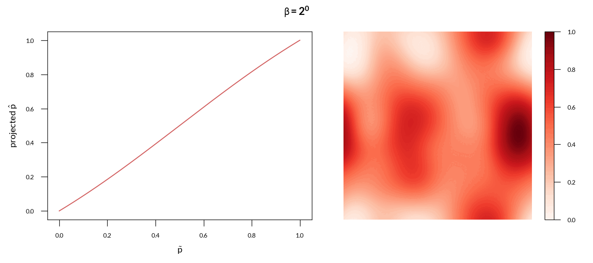
- Interpolation
\(\varepsilon(\densp)=(\varepsilon_{\rm max}-\varepsilon_{\rm min})\,\densp^m + \varepsilon_{\rm min}\) (Bendsøe et al. 1999)
Algorithm
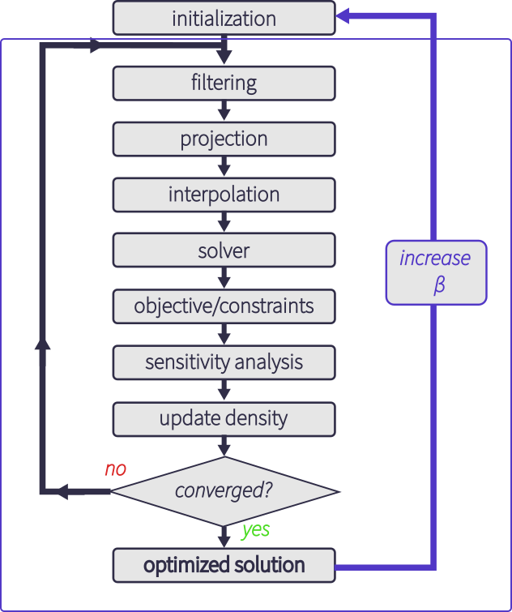
- gradient based optimization algorithmmethod of moving asymptotes (Svanberg 2002), free implementation via the
nloptpackage (Johnson 2007) - 40 iterations or until convergence on the objective or design variables
- repeated setting \(\beta =2^n\), where \(n\) is an integer between 0 and 7, restarting the algorithm with the optimized density obtained at the previous step
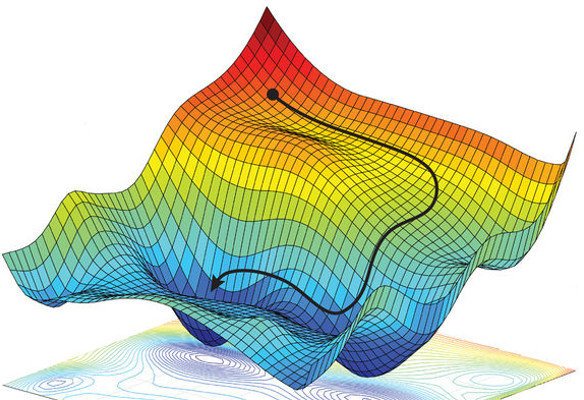
Computing gradients
Computing gradients
Solution vector \(\B u\) depends on a vector of parameters \(\B p\) of size \(M\) and defined implicitly through an operator \(\B F\) as: \[ \B F(\B u, \B p) = \B 0 \qquad(1)\]
\(\B G\) is a functional of interest of dimension \(N\), representing the quantity to be optimized
Finite differences
\[ \frac{\mathrm{d}\B G}{\mathrm{d}p_i} \approx \frac{\B G(\B p + h \B e_i) - \B G(\B p)}{h} \] where \(\B e_i\) is the vector with \(0\) in all entries except for \(1\) in the \(i^{th}\) entry.
- numerical inaccuracy
- expensive for large \(M\) and/or \(N\)
Computing gradients
Tangent linear equation
Explicitly, the gradient can be computed applying the chain rule: \[ \frac{\mathrm{d}\B G}{\mathrm{d}\B p} = \frac{\partial \B G}{\partial \B p} + \frac{\partial \B G}{\partial \B u} \frac{\mathrm{d}\B u}{\mathrm{d}\B p}. \qquad(2)\] Taking the total derivative of Equation 1 we obtain the tangent linear equation: \[ {\frac{\partial \B F(\B u, \B p)}{\partial \B u}} {\frac{\mathrm{d}\B u}{\mathrm{d}\B p}} = {-\frac{\partial \B F(\B u, \B p)}{\partial \B p}}. \]
Adjoint equation
Assuming the tangent linear system is invertible, we can rewrite the Jacobian as: \[ \frac{\mathrm{d}\B u}{\mathrm{d}\B p} = - \left(\frac{\partial \B F(\B u, \B p)}{\partial \B u}\right)^{-1} \frac{\partial \B F(\B u, \B p)}{\partial \B p}. \] After substituting this value in Equation 2 and taking the adjoint (Hermitian transpose, denoted by \(\dagger\)) we get: \[ \frac{\mathrm{d}\B G}{\mathrm{d}\B p}^{\dagger} = \frac{\partial \B G}{\partial \B p}^{\dagger} - \frac{\partial \B F(\B u, \B p)}{\partial \B p}^{\dagger} \left(\frac{\partial \B F(\B u, \B p)}{\partial \B u}\right)^{-\dagger} \frac{\partial \B G}{\partial \B u}^{\dagger} . \]
Computing gradients
Adjoint equation
Defining the adjoint variable \(\B \lambda\) as: \[ \B \lambda = \left(\frac{\partial \B F(\B u, \B p)}{\partial \B u}\right)^{-\dagger} \frac{\partial \B G}{\partial \B u}^{\dagger} \] we obtain the adjoint equation \[ \left(\frac{\partial \B F(\B u, \B p)}{\partial \B u}\right)^{\dagger} \B \lambda = \frac{\partial \B G}{\partial \B u}^{\dagger}. \]
Automatic differentiation (AD)
- A general way of taking a program which computes a value, and automatically constructing a procedure for computing derivatives of that value, accurately to working precision, and using at most a small constant factor more arithmetic operations than the original program (Griewank et al. 2008)
- Not finite differences / symbolic differentiation
- Procedure:
- Decompose original code into intrinsic functions (build computational graph)
- Differentiate the intrinsic functions, effectively symbolically
- Multiply together according to the chain rule
- Automation:
- Source code transformation
- Operator overloading
Automatic differentiation (AD)
\(f: \mathbb{R}^M \rightarrow \mathbb{R}^N\)
Example: \(f(x_1,x_2) = x_1x_2 + \sin(x_1)\)
Forward mode
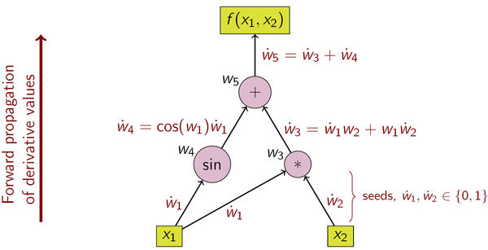
- more efficient if \(N\gg M\)
Reverse mode
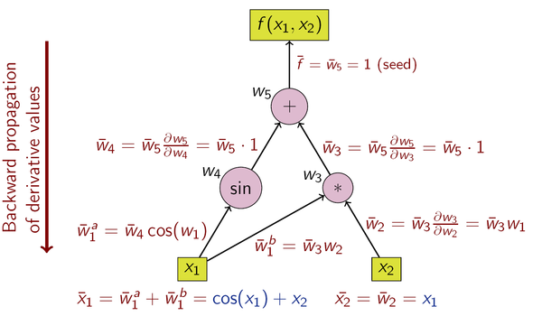
- more efficient if \(M \gg N\)
- need to store intermediate values
Finite Element Method
Open-source code
Finite Element Method
Implementation
Open source libraries with bindings for the python programming language using a custom code gyptis (Vial 2022).
- Geometry and mesh generation:
gmsh(Geuzaine et al. 2009) - FEM library:
fenicsusing second order Lagrange basis functions (Alnæs et al. 2015) - Gradient calculations:
dolfin-adjointlibrary with automatic differentiation (Mitusch et al. 2019)
gyptis
Finite Element Method
Application: Bi-focal lens
Objective: focal point at two different locations depending on the excitation frequency (Vial, Whittaker, et al. 2022) \[ \max_{p(\B r)} \quad \Phi = \left|E_1(\omega_1,\B r_1)\right| + \left|E_2(\omega_2,\B r_2)\right| \]

Optimization history
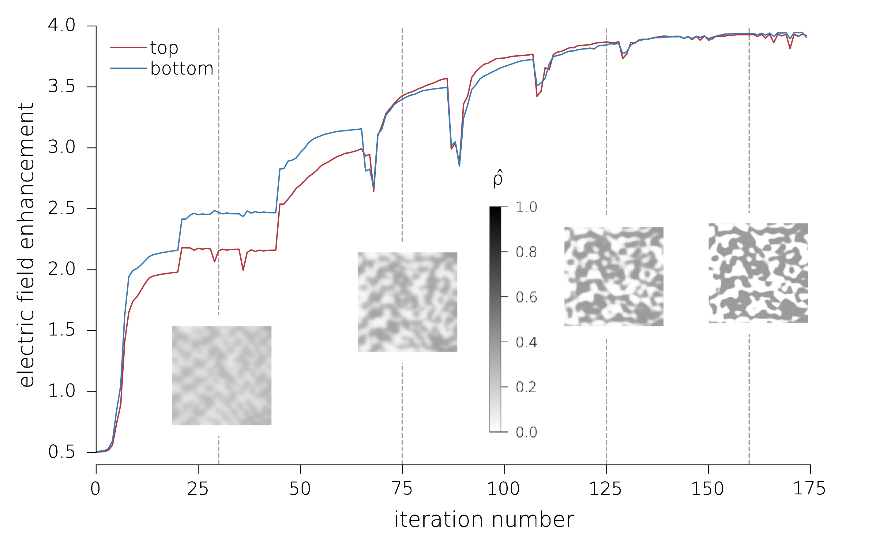
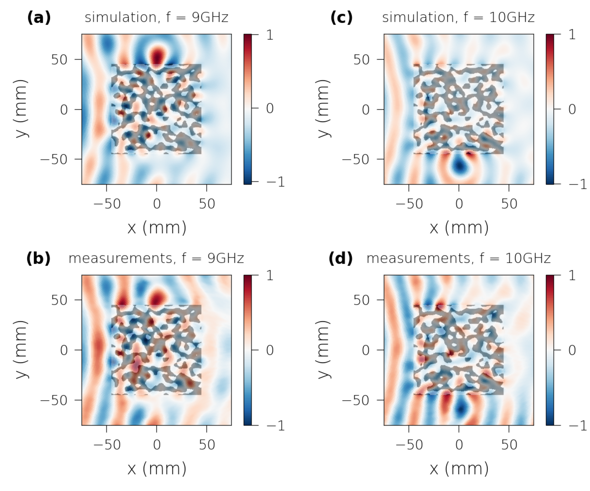
Finite Element Method
Inverse design of superscatterers
Objective: maximize the normalized scattering width (Vial and Hao 2022) \[ \max_{p(\B r)} \quad \Phi = \sigma_s/2R \]
TE
TM
Finite Element Method
Inverse design of superscatterers
Spectra
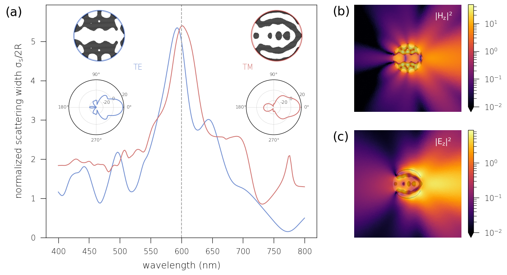
Quasi Normal Modes expansion
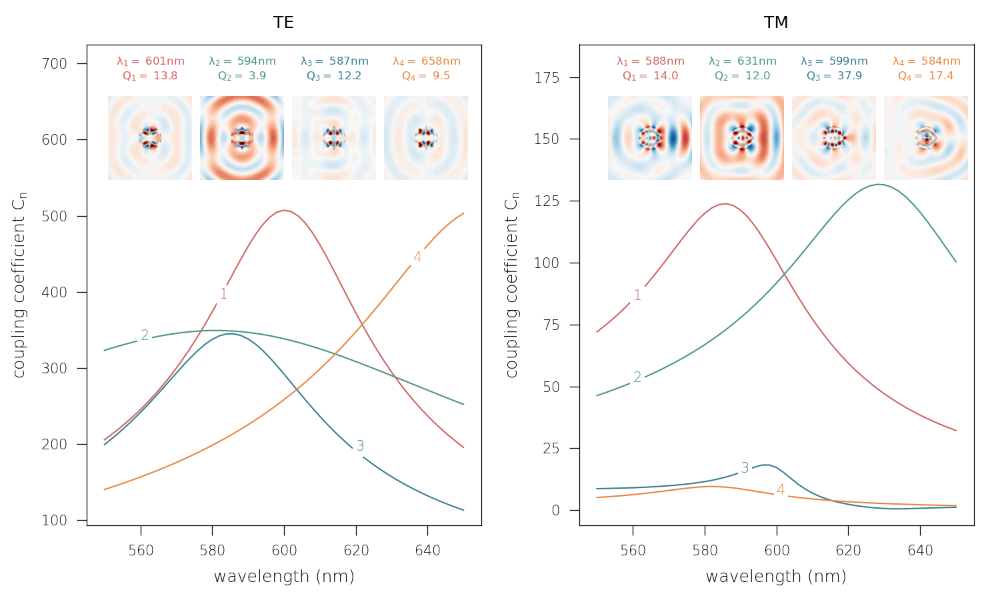
Fourier Modal Method
Open-source code
Fourier Modal Method (FMM)
- AKA Rigorous Coupled Wave Analysis (RCWA)
- Suited for a specific type of periodic structure made up of stacked structured layers
- Key idea: expand the electromagnetic fields within each layer into eigenmodes represented using a Fourier basis in the plane of periodicity (Lalanne et al. 1996; Granet et al. 1996; Whittaker et al. 1999; Liu et al. 2012)
Implementation
FMM and PWEM in python with various numerical backends for core linear algebra operations and array manipulation
numpy(Harris et al. 2020)scipy(Virtanen et al. 2020)autograd(AD) (Maclaurin et al. 2015)pytorch(AD + GPU) (Paszke et al. 2019, 2017)jax(AD + GPU) (Bradbury et al. 2018)
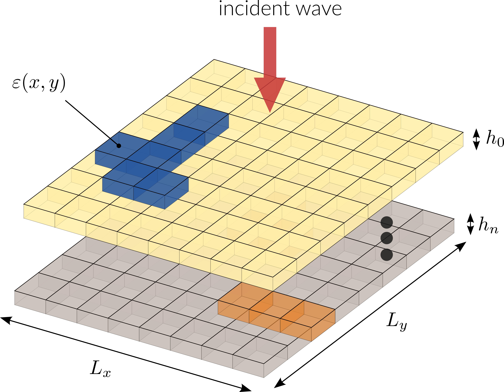
nannos
FMM benchmark
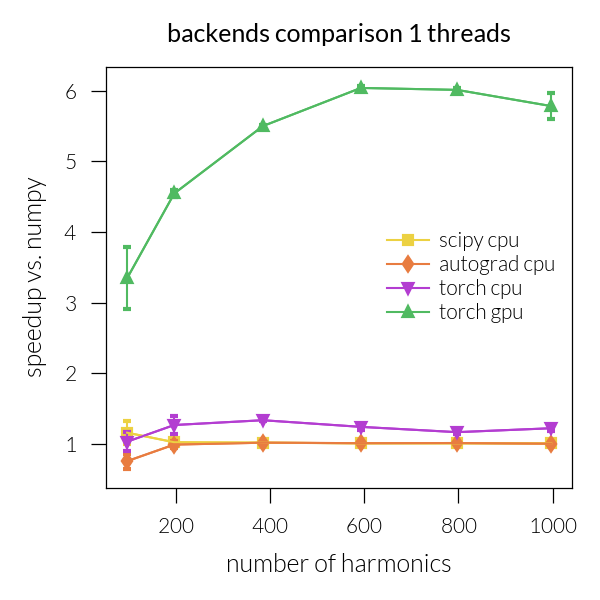
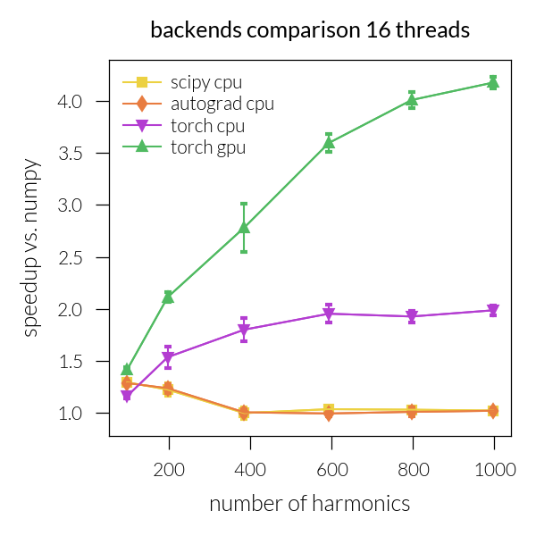
Application: metasurface
Objective: maximize the average of the transmission coefficient in the \((1,0)\) diffracted order for both polarizations: \[ \max_{p(\B r)} \quad \Phi = \frac{1}{2} \left( T^{\rm TE}_{(1,0)} + T^{\rm TM}_{(1,0)}\right) \]
Application: metasurface
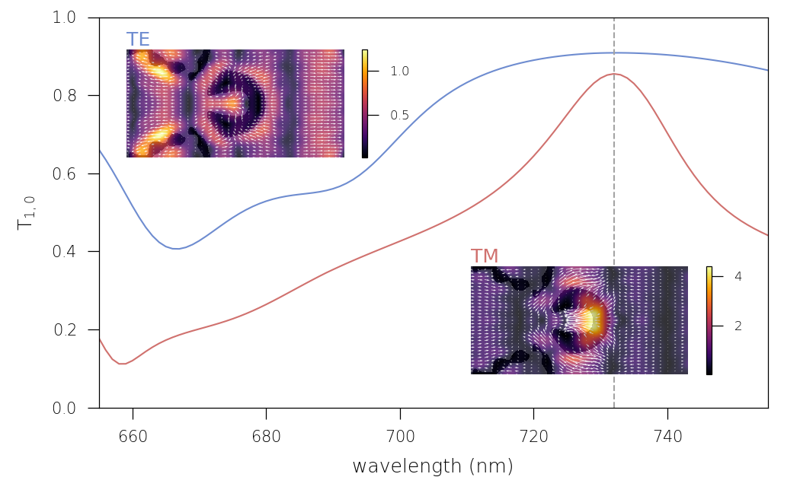Optimized metasurface
Plane Wave Expansion Method
Open-source code
Plane Wave Expansion Method
- 2D, possibly \(z\)-anisotropic materials in \(\varepsilon\) and \(\mu\), non dispersive
- Polarization decouple, expand the \(z\) components as: \[ u(\B{r})=\sum_{\B {G}} u_{\B {G}}\, {\rm e}^{i(\B {k}+\B {G}) \cdot \B{r}}, \label{eq:pwem1} \]
- After Fourier transforming Maxwell’s equations and recombining the relevant \(z\) component of the fields, we get the following generalized eigenproblem: \[ \mathcal{Q}^{\rm T} \,\hat{\tens{\theta}_\parallel}^{-1}\,\mathcal{Q}\, \Phi = k_0^2 \,\chi_{zz}\, \Phi \qquad(3)\] \(\tens{\theta}_\parallel=\tens{\mu}_\parallel\) for TM and \(\tens{\varepsilon}_\parallel\) for TE polarization, \(\mathcal{Q} = \left[\hat{k}_{y}, -\hat{k}_{x}\right]^{\rm T}\) and \(\Phi=\left[u_{\B{G}_{1}}, u_{\B{G}_{2}}, \ldots\right]^{\rm T}\)
- Reduced Bloch Mode Expansion (Hussein 2009), only solving Equation 3 at symmetry points of the first Brillouin zone and performing a second expansion using those modes as a basis set.
protis
Photonic crystals: maximizing bandgaps
- TE modes, square array with enforced \(C_4\) symmetry on the unit cell, \(\varepsilon_{\rm min}=1\) (air) and \(\varepsilon_{\rm max}=9\)
Objective: open and maximize a bandgap between the \(5^{th}\) and \(6^{th}\) eigenvalues:\[\begin{equation*}\max_{p(\B r)} \quad \Phi = \min_{\B k} \omega_{6}(\B k) - \max_{\B k} \omega_{5}(\B k)\end{equation*}\]
- Final distribution in agreement with simple geometrical rules: the walls of an optimal centroidal Voronoi tessellation with \(n=5\) points (Sigmund et al. 2008)
Photonic crystals: dispersion engineering
- TM modes, symmetry with respect to \(y\)
Objective: obtain a prescribed dispersion curve for the \(6^{th}\) band \[\begin{equation*}\min_{p(\B r)} \quad \Phi = \left\langle\left|\omega_{6}(k_x) - \langle \omega_{6}\rangle - \omega_{\rm tar}(k_x) \right|^2\right\rangle \end{equation*}\] with \[\begin{align*}\omega_{\rm tar}(k_x) =& -0.02 \cos(k_x a) + 0.01 \cos(2 k_x a) \\ &+ 0.007 \cos(3 k_x a)\end{align*}\] \(\langle f\rangle =\frac{1}{M}\sum_{m=0}^M f_m\)
Open source
Open source
- Free software: low cost, portable, customizable, vendor-independent
- Widely used programming language, is easily installable and integrates with the rich and growing scientific Python ecosystem
- Reproducible and collaborative research
- Auto-differentiation: inverse design of photonic structures and metamaterials with improved performances and explore intriguing effects
Get the code
- Development on gitlab: continuous integration for testing and documentation deployment
- Install / fork it / run it online / report bugs!
FEM
FMM
PWEM